When I left school I tried at all the usual suspects for an apprenticeship, Ford, Sony, Hawker Siddley etc. but as a very shy, introverted 16 year old I didn’t get very far.
One day when Dad and I were in Cardiff, he suggested trying for a career in the Army. We called into the careers office and a couple of weeks later I was at Sutton Coldfield for aptitude, fitness and IQ tests.
Apparently I did well and I came second overall from that days candidates and so was given a choice of what I wanted to do.
As far as a career was concerned I had always this idea that I wanted to be an electrician so I signed up as an apprentice electrician with the Corps of Royal Engineers based for the first 2 and a half years in Chepstow and started there on September 15th 1981.
I think that this was probably the best time of my life, I made some great mates, some of whom I am still in touch with, a good example of Army friends would be Frank, we hadn’t spoken to each other face to face since these days. Some banter on Facebook but never in the same room together. Anyway some 40 years later I was working in Frank’s hometown, I messaged him to see if I could call round and of course he said yes. I walked through his door, he introduced me to his wife and we just carried on with the last conversation we had in Chepstow it was as though the last 40 years had never existed.
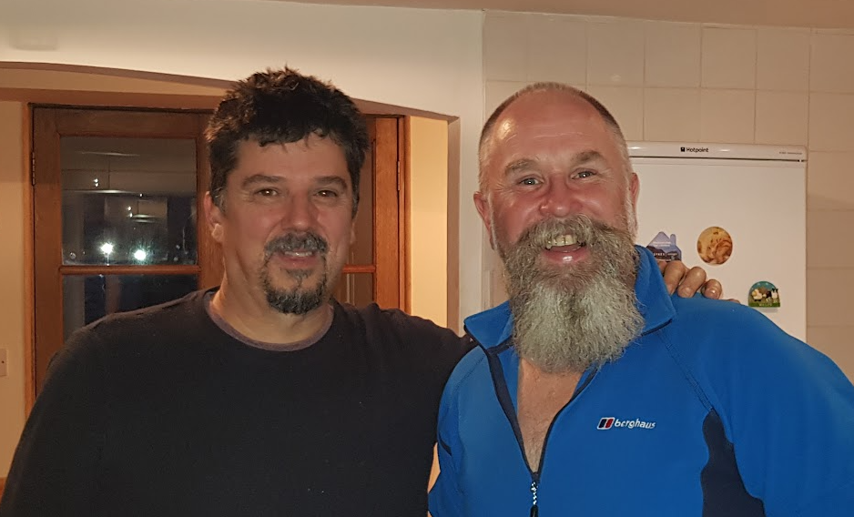
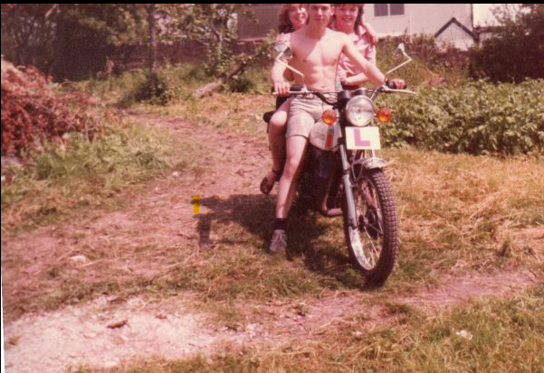
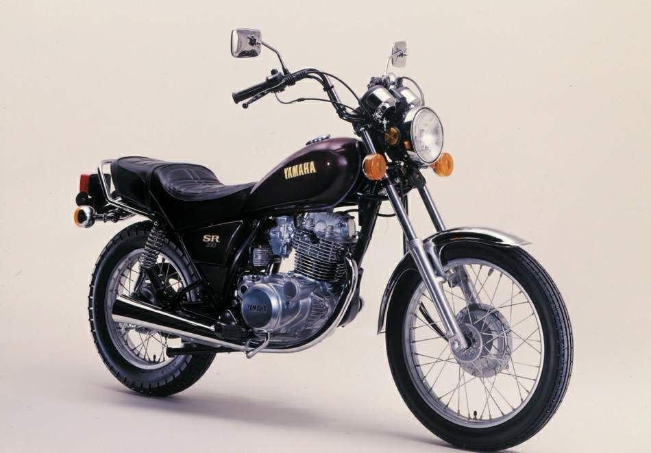
During my time in Chepstow I owned a Suzuki TS100 and then a Yamaha SR250. The riding, modifications and accidents are in their own stories.
Same thing with Danny Bear and Mo at our reunion in 2021, sadly Danny passed away unexpectedly the following year, he would have been 56, still just a sprog.
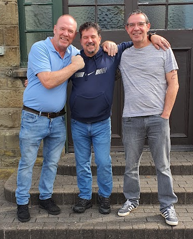
Most of our time in Chepstow seemed to involve running, usually carrying something heavy. I loved it. The TS100 story has more of those early training memories, along with the bike that eventually got me off camp under my own steam.
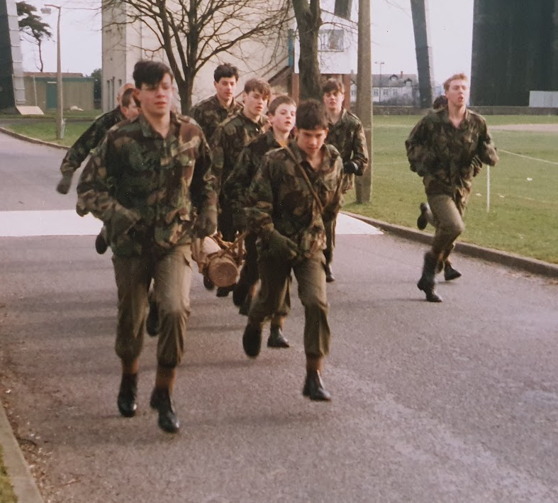
We had to choose two hobbies. I picked swimming and cycling, although swimming got most of my attention. I represented the college and was E Company swimming team captain in my final year. One of the few occasions when the Army wanted me to get somewhere quickly without running.
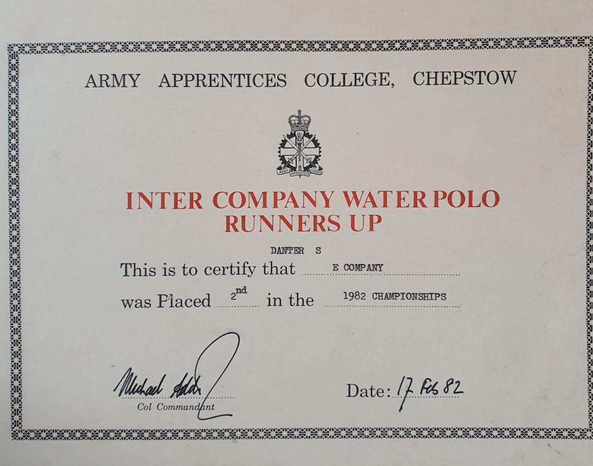
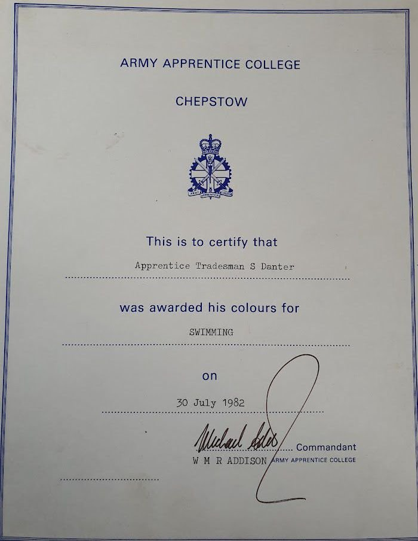
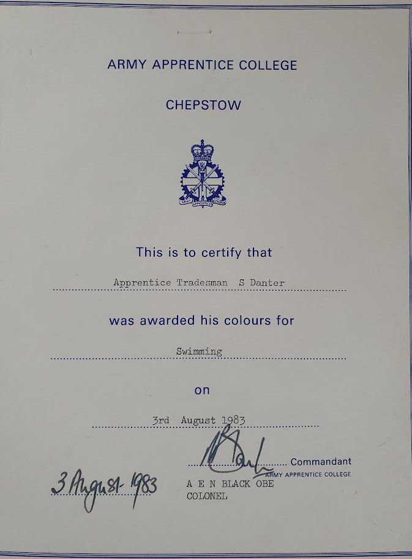
Training Finished. Preferences Ignored.
After Chepstow came another six months of Army training at Gibraltar Barracks in Camberley. Then it was time to find out where I’d spend the next three years.
During 1984 I'd put my trade and combat engineer training behind me and I was ready to find out where I was going to be posted for the next three years.
I was given a list of postings to choose from and asked to fill in forms, tick a couple of boxes listing my preferred postings and put my ✗ in the signature box. I can't remember exactly which ones I chose, Waterbeach and two others close to home, all of them in the UK.
So naturally...
I was posted to Roberts Barracks in Osnabrück, West Germany.
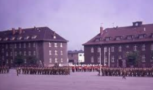
I was later to discover that there was a fairly reliable Army system in operation: those who asked for UK postings went to Germany, while those who asked for Germany stayed in the UK.
Typical British Army.
The Boat Train
For my first few journeys to what was fondly called “Traz”, I travelled on the Boat Train.

That was a journey and a half.
First came an InterCity 125 from Bridgend to London, followed by the Underground across London to Liverpool Street. From there it was an altogether less glamorous train to Harwich, then onto the ferry across the North Sea to the Hook of Holland.
Once in Holland there was another train, one of those old continental trains with separate six-seat compartments, which eventually carried me all the way to Osnabrück.
The final leg was by taxi to the barracks.
The taxi was a Mercedes, which I think may have been the first time I'd ever travelled in one.
Possibly the last too.
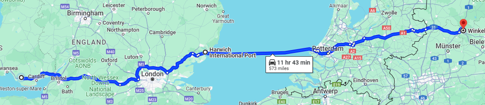
The journey took a full day, the journey details being understandably vague as alcohol was available on most sections of the trip.
At the Dutch-German border, customs or border police would board the train wearing uniforms that looked as though they hadn't changed since the 1960s.
They'd check our passports and occasionally our bags, then get off again at the first station inside Germany. The same thing happened in reverse on the journey home.
Eventually I replaced that travelling arrangement with a Suzuki GS400 and started riding between Germany and Wales. The bike story covers those journeys, including the ferries, frozen legs and occasional extra gallon of petrol.
16 Field Squadron, 25 Engineer Regiment
Roberts Barracks, Osnabrück. BFPO 36. “The Traz”.
When I first arrived, much of the barrack block was almost empty because the squadron was away somewhere. The rear party seemed to consist mainly of people who were either ill, unavailable for deployment or particularly enthusiastic drinkers.
Into this environment arrived Danny “Bear” Dawkins-Smith and me.
We were immediately dragged to the NAAFI and introduced to something called Rusty Nails, which I remember as involving rum and Coke, although after several of them the exact ingredients became largely irrelevant.
The evening continued until severe drunkenness took over.
I have mixed emotions about this place, on one hand it was incredibly boring but on the other it was a great life experience.
Most of the bull from Chepstow and Training Reg. was gone but it still lingered in the background. Parades in the mornings, the occasional run, maybe twice a week now and very rarely room and kit inspections.
I heard a rumour once or twice that alcoholism was a major problem in the army and that it was at its highest in Germany, more specifically, Osnabruck. More specifically Roberts Barracks. More specifically 25 Engineer Regiment…
Most evening the barrack blocks would sing to the sound of drunk squaddies intent on destroying one another and/or their accommodation. Inevitably we would be out on parade the following morning, made to stand in ranks until someone owned up to the damage or got grassed on.
Vince and the Barrack Room
It was at The Traz that I met the man who would become one of my closest friends: Vince.
We eventually became roommates, biking buddies and great friends. Years later he would be best man at my wedding.
Other roommates included Johnny Priestman from Hull and Tommy from Kendal.
Tommy's mother once sent me a Kendal Mint Cake because apparently she thought I looked undernourished.
Vince, as it turned out, also enjoyed a drink.
So inevitably we'd find ourselves in some bar somewhere drinking German lager or whatever local concoction seemed like a good idea at the time, then stagger back to barracks in the early hours.
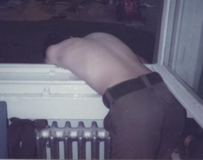
The Post Office Corps sorting office was directly below us.
Unfortunately, anything leaving Vince's window tended to trickle down their windows below.
Because Vince's bed was next to the window, he naturally got the blame.
Being a loyal friend, I let him.
Vince still rides, as do I, although I can’t for the life of me remember which bike he had in Germany. Mine was the Suzuki GS400, which became my regular transport between Osnabrück and South Wales.

Army Life: Hurry Up and Wait
One thing Army life teaches you is that boredom and repetition can exist on an industrial scale.
A typical cycle might begin with an Active Edge exercise.
We'd be dragged out of bed at stupid o'clock in the morning, empty the stores into APCs and trucks, drive out somewhere and live in a field for a while.
Eventually we'd return to barracks and unload everything back into the stores.
The following day we'd take it all back out again so it could be cleaned.
Then we'd put it away.
A day or two later we'd empty the stores again to paint and clean the shelves and floors.
Then we'd put everything back.
Someone would then decide an inventory was required.
So we'd take everything out again, count it and put it all back.
A few weeks later we'd be dragged out of bed at stupid o'clock and start the whole process again.
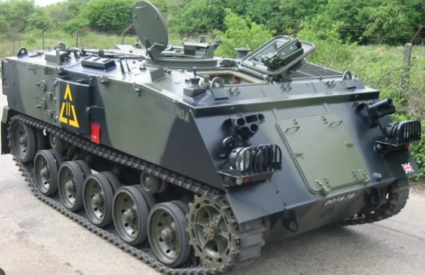
Exercise Lionheart
We also took part in Exercise Lionheart, which was described as the largest British military exercise since the Second World War.
I think we were away for three or perhaps four weeks.
We dug trenches.
We built bridges.
Sometimes we'd finish building a bridge only for an officer to decide it needed to be moved a few feet.
Yes, that really happened.
We laid and marked training minefields, played at being the enemy, ate from ration packs, cleaned our rifles, slept whenever an opportunity presented itself and were regularly woken just before dawn in case somebody decided to attack us.
And we dug more trenches.
Lots of trenches.
Johnny and I were once tasked with guarding what we'd been told was a nuclear demolition charge positioned on a bridge.
We camped under the bridge for several days and eventually ran out of food.
The only thing left in my ration pack was an apple pie we'd been warned not to eat because there had apparently been cases of food poisoning linked to them.
I was starving.
I ate it.
It certainly cured my constipation.
About two weeks into the exercise somebody finally introduced mobile showers.
My understanding was that they were compulsory for NCOs but optional for the rest of us.
So naturally I didn't bother.
Northern Ireland
After Lionheart came something very different: a four-and-a-half-month posting to Omagh in Northern Ireland.
There was a lot of preparation beforehand and, for the first time in a while, the training felt as though it had a very clear purpose.
I became part of a four-man search team.
Our job involved searching areas and buildings for weapons, explosives, tripwires and other devices.
Some tasks were considerably less pleasant than others.
One of the worst was searching an area after an explosive device had detonated, checking for secondary devices intended to injure the police, medics or soldiers arriving to deal with the aftermath.
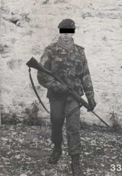
Despite all that danger, I suffered perhaps my most horrific injury in Northern Ireland during an entirely different operation.
Our little group had been in the NAAFI for most of the day and decided it would be a good idea to visit the “safe” pub in Omagh.
Our chosen transport was an abandoned shopping trolley.
To cut a long story short, I lost control at the bottom of a hill, spun out and badly damaged my big toenail.
It stayed black for years.
I should probably have claimed compensation.
I'm sure somebody would now.
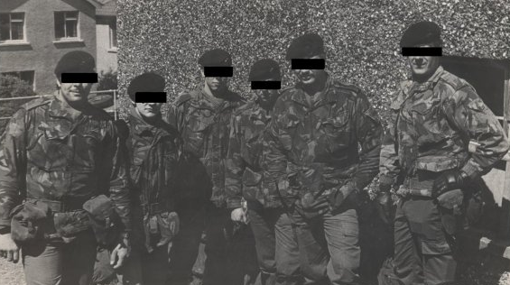
Back to Germany
Not long after returning to Germany I somehow ended up working behind the bar in the Officers' Mess.
I can't remember exactly how that came about, but it wasn't a bad job.
More importantly, it got me out of normal Army duties for a while.
Days to Do
I had some very good times in Germany, but I also had a “days to do” chart counting down from somewhere around 300 until my discharge. Apparently counting down to going somewhere else is a habit I’ve had for quite a while.
Eventually the chart reached the right number and my Army career came to an end. I packed up and rode the Suzuki home to Wales.
After years of Army life, I had a trade, some lifelong friends and a selection of skills that didn’t immediately seem to match the local job adverts. My next job was at the BP petrol station in Bridgend, before I eventually joined CBSL.